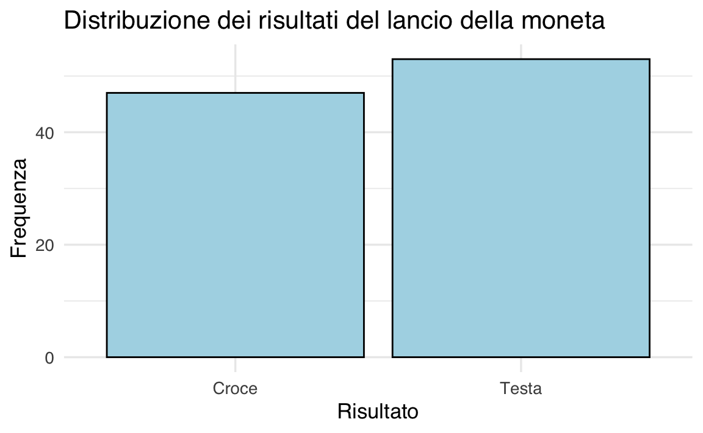
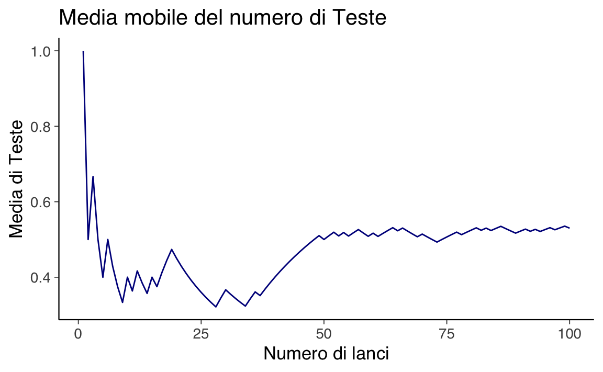
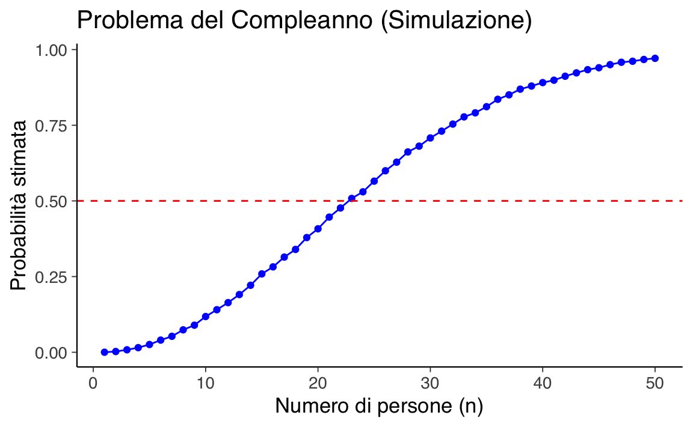

here::here("code", "_common.R") |>
source()
# Load packages
if (!requireNamespace("pacman")) install.packages("pacman")
pacman::p_load(readr)6 Modelli probabilistici
In questo capitolo imparerai a
- comprendere come gli esperimenti casuali possono essere modellati matematicamente e come tale modellizzazione ci permetta di calcolare diverse proprietà di interesse per questi esperimenti.
Prerequisiti
- Leggere il capitolo Probability Models del testo di Chan & Kroese (2025).
- Leggere il ?sec-apx-sets dell’Appendice.
- Leggere il ?sec-apx-combinatorics dell’Appendice.
Preparazione del Notebook
6.1 Introduzione
Dopo un’introduzione al significato “filosofico” del concetto di probabilità, presentata nella Capitolo 5, questo capitolo sviluppa la discussione in modo più formale, introducendo i concetti fondamentali del calcolo delle probabilità a partire dalla nozione di esperimento casuale. Mostreremo come la modellazione matematica di un esperimento casuale permetta di calcolare diverse proprietà di interesse relative a tali esperimenti. In particolare, esploreremo le nozioni di spazio campionario, eventi e le proprietà della probabilità, fornendo gli strumenti necessari per comprendere e applicare questi concetti in contesti pratici.
6.2 Esperimenti Casuali
Il concetto cardine della probabilità è quello dell’esperimento casuale: un procedimento il cui esito non può essere determinato in anticipo, pur essendo suscettibile di analisi quantitativa. Alcuni esempi di esperimenti casuali sono:
- Lanciare un dado e osservare il numero riportato sulla faccia superiore.
- Estrarre una carta a caso da un mazzo e verificarne il seme e il valore.
- Misurare il livello di stress percepito da un gruppo di individui in un determinato periodo (ad esempio, durante un esame o un evento stressante).
- Contare il numero di risposte corrette fornite dai partecipanti a un test di memoria entro un intervallo di tempo prestabilito.
- Selezionare casualmente 50 persone e registrare quante di esse mostrano una predisposizione alla creatività, misurata tramite un questionario standardizzato.
- Scegliere a caso dieci persone e valutare il loro grado di introversione attraverso uno strumento di autovalutazione psicologica.
- Selezionare casualmente 50 persone e contare quante sono mancine.
- Scegliere a caso dieci individui e misurarne l’altezza.
Lo scopo dell’analisi probabilistica è comprendere il comportamento di tali esperimenti tramite la formulazione di modelli matematici. Una volta rappresentato matematicamente un esperimento casuale, è possibile calcolare grandezze d’interesse, come le probabilità e le aspettative. Questi modelli, implementabili anche al computer, consentono di simulare l’esperimento. Inoltre, i modelli matematici che descrivono gli esperimenti casuali costituiscono la base della statistica, la cui finalità è stabilire quale tra diversi modelli concorrenti risulti più adeguato ai dati osservati.
6.2.1 Il Lancio di una Moneta
Uno degli esperimenti casuali più elementari è il lancio ripetuto di una moneta. Gran parte della teoria della probabilità si può infatti fondare su questo semplice esperimento. Per approfondire il comportamento di questo esperimento, è possibile simularlo al computer utilizzando, ad esempio, il linguaggio R. Il seguente programma R simula 100 lanci di una moneta equa (cioè con probabilità uguali per Testa e Croce) e rappresenta graficamente i risultati mediante un diagramma a barre.
set.seed(123) # Imposta il seed per garantire la riproducibilità
x <- runif(100) < 0.5 # Genera 100 numeri casuali; verifica se sono minori di 0.5
t <- 1:100 # Indice sequenziale dei lanci
# Creazione del dataframe per ggplot2
data <- data.frame(Lancio = t, Risultato = ifelse(x, "Testa", "Croce"))
# Creazione del grafico a barre
ggplot(data, aes(x = Risultato)) +
geom_bar() +
labs(title = "Distribuzione dei risultati del lancio della moneta",
x = "Risultato",
y = "Frequenza")
Nel codice, la funzione runif genera 100 numeri casuali distribuiti uniformemente nell’intervallo \([0, 1]\). Confrontando ciascun numero estratto con il valore 0.5, si ottiene un vettore logico (vero/falso) che rappresenta, ad esempio, l’esito di un lancio di moneta (Testa o Croce). I risultati tipici di una simulazione di questo esperimento sono mostrati nella figura seguente, dove viene illustrato l’andamento della media delle Teste al variare del numero di lanci.
y <- cumsum(x)/t # Calcola la media cumulativa delle Teste
# Creazione del dataframe per il grafico della media mobile
data_mean <- data.frame(Lancio = t, Media_Testa = y)
# Creazione del grafico a linea
ggplot(data_mean, aes(x = Lancio, y = Media_Testa)) +
geom_line() +
labs(title = "Media mobile del numero di Teste",
x = "Numero di lanci",
y = "Media di Teste")
Il grafico risultante mostra come la media delle Teste sembri convergere verso 0.5, nonostante le fluttuazioni dovute alla natura casuale dell’esperimento. Alcune domande tipiche che si pongono in questo contesto sono:
- Qual è la probabilità di ottenere un certo numero x di Teste in 100 lanci?
- Qual è il numero atteso di Teste?
- Quanto tempo occorre in media per ottenere la prima Testa?
- Con quale rapidità la media cumulativa delle Teste converge al valore p?
Nel contesto statistico, dove si osservano i dati di un esperimento (ad esempio, i risultati di 100 lanci), si possono porre domande quali:
- La moneta è davvero equa?
- Qual è il metodo migliore per stimare la probabilità p dalla sequenza osservata di Teste e Croci?
- Qual è l’accuratezza o la precisione della stima ottenuta?
6.2.2 I Tre Elementi Fondamentali del Modello
I modelli matematici per descrivere un esperimento casuale si basano su tre componenti principali:
- lo spazio campionario,
- gli eventi,
- la probabilità.
Esaminiamo di seguito ciascuno di questi elementi.
6.3 Spazio Campionario
Pur non potendo prevedere l’esito di un esperimento casuale, possiamo generalmente identificare l’insieme di tutti i possibili risultati. Questo insieme è definito come lo spazio campionario.
Definizione 6.1 Lo spazio campionario \(\Omega\) di un esperimento casuale è l’insieme di tutti i possibili esiti dell’esperimento.
Esempio 6.1 Consideriamo lo spazio campionario di alcuni esperimenti casuali.
Lancio di due dadi consecutivi:
\[ \Omega = \{(1,1), (1,2), \dots, (6,6)\}. \]Tempo di reazione a uno stimolo visivo:
\[\Omega = \mathbb{R}^+,\]
ovvero l’insieme dei numeri reali positivi.Numero di errori in un test di memoria a breve termine:
\[\Omega = \{0, 1, 2, \dots\}.\]Misurazione delle altezze di dieci persone:
\[\Omega = \{(x_1, \dots, x_{10}) : x_i \ge 0, \; i=1,\dots,10\} \subset \mathbb{R}^{10}.\]
6.4 Eventi
Solitamente non siamo interessati ad un singolo esito, ma ad un insieme di essi. Un evento è un sottoinsieme dello spazio campionario a cui possiamo assegnare una probabilità.
Definizione 6.2 Un evento è un sottoinsieme \(A \subseteq \Omega\) al quale viene assegnata una probabilità. Indichiamo gli eventi con le lettere maiuscole \(A, B, C, \dots\). Diciamo che l’evento \(A\) si verifica se l’esito dell’esperimento appartiene a \(A\).
Esempio 6.2 Consideriamo alcuni possibili eventi definiti sugli spazi campionari dell’Esempio 6.1.
Lancio di due dadi consecutivi.
Evento: “La somma dei due dadi è uguale a 7”.
\(A = \{(1,6), (2,5), (3,4), (4,3), (5,2), (6,1)\}\).Tempo di reazione a uno stimolo visivo.
Evento: “Il tempo di reazione è inferiore a 2 secondi”.
\(A = [0, 2)\).Numero di errori in un test di memoria a breve termine.
Evento: “Il numero di errori è al massimo 3”.
\(A = \{0, 1, 2, 3\}\).Misurazione delle altezze di dieci persone.
Evento: “Almeno due persone hanno un’altezza superiore a 180 cm”.
\(A = \{(x_1, \dots, x_{10}) : \text{almeno due } x_i > 180\}\).
Questi esempi mostrano come gli eventi possano essere definiti in modo diverso a seconda della natura dello spazio campionario e del contesto di interesse.
Esempio 6.3 Supponiamo di lanciare una moneta tre volte e di annotare se esce Testa (H) o Croce (T) in ogni lancio. Lo spazio campionario può essere rappresentato come:
\[ \Omega = \{HHH, HHT, HTH, HTT, THH, THT, TTH, TTT\}, \]
dove, ad esempio, \(HTH\) indica che il primo lancio dà Testa, il secondo Croce e il terzo Testa. Un’alternativa equivalente è considerare lo spazio campionario come l’insieme dei vettori binari di lunghezza 3, \(\{0, 1\}^3\), dove ad esempio \(HTH\) corrisponde a \((1, 0, 1)\).
L’evento \(A\) che il terzo lancio sia Testa si esprime come:
\[ A = \{HHH, HTH, THH, TTH\}. \]
6.5 Operazioni sugli Eventi
Poiché gli eventi sono definiti come insiemi, è naturale applicare loro le classiche operazioni insiemistiche. Le principali operazioni sugli eventi sono:
Intersezione (\(A \cap B\)): Rappresenta l’evento in cui si verificano sia \(A\) che \(B\).
Ad esempio, se \(A\) è “piove” e \(B\) è “fa freddo”, allora \(A \cap B\) è “piove e fa freddo”.Unione (\(A \cup B\)): Rappresenta l’evento in cui si verifica almeno uno tra \(A\) e \(B\).
Continuando con l’esempio precedente, \(A \cup B\) è “piove oppure fa freddo (o entrambi)”.Complemento (\(A^c\)): Rappresenta l’evento in cui \(A\) non si verifica.
Se \(A\) è “piove”, allora \(A^c\) è “non piove”.Sottoinsieme (\(B \subseteq A\)): Se \(B\) è un sottoinsieme di \(A\), allora il verificarsi di \(B\) implica il verificarsi di \(A\).
Ad esempio, se \(A\) è “piove” e \(B\) è “piove forte”, allora \(B \subseteq A\).
Due eventi \(A\) e \(B\) sono detti disgiunti (o mutualmente esclusivi) se non condividono alcun elemento, ovvero se \(A \cap B = \emptyset\). In altre parole, il verificarsi di uno esclude il verificarsi dell’altro. Ad esempio, se \(A\) è “esce testa” e \(B\) è “esce croce” in un lancio di moneta, allora \(A\) e \(B\) sono disgiunti.
Esempio 6.4 Consideriamo l’esperimento del lancio di due dadi. Lo spazio campionario \(\Omega\) è costituito da tutte le possibili coppie di risultati che possono verificarsi. Ogni dado ha 6 facce, quindi lo spazio campionario è:
\[ \Omega = \{(1,1), (1,2), \dots, (6,6)\}, \]
per un totale di \(6 \times 6 = 36\) esiti possibili.
Siamo interessati all’evento \(A\): “la somma dei due dadi è almeno 10”. Questo evento include tutte le coppie di risultati la cui somma è 10, 11 o 12. Gli esiti che soddisfano questa condizione sono:
\[ A = \{(4,6), (5,5), (5,6), (6,4), (6,5), (6,6)\}. \]
Ecco come generare lo spazio campionario in R in modo algoritmico e definire l’evento “la somma dei due dadi è almeno 10”:
Lo spazio campionario \(\Omega\) è costituito da tutte le possibili coppie di risultati del lancio di due dadi. In R, possiamo generarlo utilizzando la funzione expand.grid, che crea tutte le combinazioni possibili tra i valori dei due dadi.
# Generazione dello spazio campionario Omega
dado <- 1:6 # Facce di un dado
Omega <- expand.grid(Dado1 = dado, Dado2 = dado) # Tutte le combinazioni possibiliL’output sarà una tabella con 36 righe, una per ogni combinazione possibile:
# Visualizzazione dello spazio campionario
print(Omega)
#> Dado1 Dado2
#> 1 1 1
#> 2 2 1
#> 3 3 1
#> 4 4 1
#> 5 5 1
#> 6 6 1
#> 7 1 2
#> 8 2 2
#> 9 3 2
#> 10 4 2
#> 11 5 2
#> 12 6 2
#> 13 1 3
#> 14 2 3
#> 15 3 3
#> 16 4 3
#> 17 5 3
#> 18 6 3
#> 19 1 4
#> 20 2 4
#> 21 3 4
#> 22 4 4
#> 23 5 4
#> 24 6 4
#> 25 1 5
#> 26 2 5
#> 27 3 5
#> 28 4 5
#> 29 5 5
#> 30 6 5
#> 31 1 6
#> 32 2 6
#> 33 3 6
#> 34 4 6
#> 35 5 6
#> 36 6 6L’evento \(A\) è definito come “la somma dei due dadi è almeno 10”. Per identificare queste combinazioni, aggiungiamo una colonna che calcola la somma dei due dadi e filtriamo le righe in cui la somma è maggiore o uguale a 10.
# Aggiunta di una colonna per la somma dei due dadi
Omega$Somma <- Omega$Dado1 + Omega$Dado2
# Definizione dell'evento A: somma dei due dadi almeno 10
A <- Omega[Omega$Somma >= 10, ]L’output sarà una tabella con le combinazioni in cui la somma è almeno 10:
# Visualizzazione dell'evento A
print(A)
#> Dado1 Dado2 Somma
#> 24 6 4 10
#> 29 5 5 10
#> 30 6 5 11
#> 34 4 6 10
#> 35 5 6 11
#> 36 6 6 12In sintesi,
- lo spazio campionario \(\Omega\) è stato generato algoritmicamente utilizzando
expand.grid; - l’evento \(A\) è stato definito filtrando le combinazioni in cui la somma dei due dadi è almeno 10;
- l’evento \(A\) è stato rappresentato sia come dataframe che come lista di vettori, a seconda delle esigenze.
Esempio 6.5 Consideriamo un esperimento in cui lanciamo una moneta tre volte consecutivamente. Ogni lancio può risultare in Testa (H) o Croce (T). Lo spazio campionario \(\Omega\) è costituito da tutte le possibili sequenze di risultati dei tre lanci. Ci sono \(2^3 = 8\) possibili esiti, che possono essere rappresentati come:
\[ \Omega = \{\text{HHH}, \text{HHT}, \text{HTH}, \text{HTT}, \text{THH}, \text{THT}, \text{TTH}, \text{TTT}\}. \]
Vogliamo definire in R l’evento \(A\): “Il terzo lancio della moneta dia Testa (H)”. Questo evento include tutte le sequenze in cui il terzo carattere è “H”.
In R, possiamo rappresentare lo spazio campionario \(\Omega\) come un vettore di stringhe, dove ogni stringa corrisponde a una sequenza di risultati.
# Definizione dello spazio campionario Omega
omega <- c("HHH", "HHT", "HTH", "HTT", "THH", "THT", "TTH", "TTT")L’output sarà:
# Visualizzazione dello spazio campionario
print(omega)
#> [1] "HHH" "HHT" "HTH" "HTT" "THH" "THT" "TTH" "TTT"L’evento \(A\) è costituito da tutte le sequenze in cui il terzo lancio è Testa (H). Per identificare queste sequenze, utilizziamo la funzione substr, che estrae il terzo carattere da ciascuna stringa e verifica se è uguale a “H”.
# Definizione dell'evento A: terzo lancio è Testa (H)
A <- omega[substr(omega, 3, 3) == "H"]Spiegazione del codice:
-
substr(omega, 3, 3)estrae il terzo carattere da ciascuna stringa nel vettoreomega. -
substr(omega, 3, 3) == "H"crea un vettore logico (vero/falso) che indica se il terzo carattere è “H”. -
omega[...]filtra il vettoreomega, mantenendo solo le sequenze che soddisfano la condizione.
L’output sarà:
# Visualizzazione dell'evento A
print(A)
#> [1] "HHH" "HTH" "THH" "TTH"Queste sono le sequenze in cui il terzo lancio è Testa (H).
In sintesi,
- lo spazio campionario \(\Omega\) è stato definito come un vettore di stringhe in R;
- l’evento \(A\) è stato costruito filtrando le sequenze in cui il terzo carattere è “H”, utilizzando la funzione
substr(x, start, stop); - l’evento \(A\) è stato visualizzato e corrisponde alle sequenze: HHH, HTH, THH, TTH.
Questo esercizio illustra come definire e manipolare eventi in R, utilizzando operazioni di base su stringhe e vettori.
Esempio 6.6 Vogliamo verificare in R se due eventi \(A\) e \(B\) sono disgiunti. Per farlo, controlliamo se la loro intersezione è un insieme vuoto.
Supponiamo di avere i due seguenti eventi:
- \(A = \{1, 2, 3\}\)
- \(B = \{4, 5, 6\}\)
In R, definiamo questi eventi come vettori numerici:
L’output sarà:
Per verificare se \(A\) e \(B\) sono disgiunti, utilizziamo la funzione intersect, che calcola l’intersezione tra due insiemi. Se l’intersezione è vuota, i due eventi sono disgiunti.
# Calcolo dell'intersezione tra A e B
intersezione <- intersect(A, B)
# Verifica se l'intersezione è vuota
if (length(intersezione) == 0) {
print("A e B sono disgiunti: l'intersezione è vuota.")
} else {
print("A e B non sono disgiunti: l'intersezione non è vuota.")
}
#> [1] "A e B sono disgiunti: l'intersezione è vuota."Spiegazione del codice:
-
intersect(A, B)calcola l’intersezione tra i vettori \(A\) e \(B\); -
length(intersezione) == 0verifica se l’intersezione è vuota (cioè se non ci sono elementi in comune); - se l’intersezione è vuota, i due eventi sono disgiunti; altrimenti, non lo sono;
-
numeric(0)indica che l’intersezione è un insieme vuoto; - il messaggio conferma che \(A\) e \(B\) sono disgiunti.
Esempio 6.7 Consideriamo l’esperimento del lancio consecutivo di due dadi. Lo spazio campionario \(\Omega\) è costituito da tutte le possibili coppie di risultati:
\[ \Omega = \{(1, 1), (1, 2), \dots, (6, 6)\}. \]
Definiamo due eventi:
Evento \(A\): “Il primo dado mostra un 6”.
Questo evento include tutte le coppie in cui il primo dado è 6:
\[ A = \{(6, 1), (6, 2), (6, 3), (6, 4), (6, 5), (6, 6)\}. \]Evento \(B\): “Il secondo dado mostra un 6”.
Questo evento include tutte le coppie in cui il secondo dado è 6:
\[ B = \{(1, 6), (2, 6), (3, 6), (4, 6), (5, 6), (6, 6)\}. \]
L’intersezione \(A \cap B\) rappresenta l’evento in cui entrambi i dadi mostrano un 6:
\[ A \cap B = \{(6, 6)\}. \]
Implementazione in R
Utilizziamo la funzione expand.grid per generare tutte le possibili combinazioni dei risultati dei due dadi.
# Generazione dello spazio campionario Omega
dado <- 1:6 # Facce di un dado
Omega <- expand.grid(Dado1 = dado, Dado2 = dado) # Tutte le combinazioni possibiliL’output sarà una tabella con 36 righe, una per ogni combinazione possibile:
# Visualizzazione dello spazio campionario
print(Omega)
#> Dado1 Dado2
#> 1 1 1
#> 2 2 1
#> 3 3 1
#> 4 4 1
#> 5 5 1
#> 6 6 1
#> 7 1 2
#> 8 2 2
#> 9 3 2
#> 10 4 2
#> 11 5 2
#> 12 6 2
#> 13 1 3
#> 14 2 3
#> 15 3 3
#> 16 4 3
#> 17 5 3
#> 18 6 3
#> 19 1 4
#> 20 2 4
#> 21 3 4
#> 22 4 4
#> 23 5 4
#> 24 6 4
#> 25 1 5
#> 26 2 5
#> 27 3 5
#> 28 4 5
#> 29 5 5
#> 30 6 5
#> 31 1 6
#> 32 2 6
#> 33 3 6
#> 34 4 6
#> 35 5 6
#> 36 6 6Filtriamo lo spazio campionario per definire gli eventi \(A\) e \(B\).
# Definizione dell'evento A: primo dado mostra un 6
A <- Omega[Omega$Dado1 == 6, ]
# Definizione dell'evento B: secondo dado mostra un 6
B <- Omega[Omega$Dado2 == 6, ]L’output sarà:
L’intersezione \(A \cap B\) è l’evento in cui entrambi i dadi mostrano un 6. Possiamo calcolarla utilizzando la funzione merge.
# Calcolo dell'intersezione A ∩ B
A_intersezione_B <- merge(A, B)L’output sarà:
print(A_intersezione_B)
#> Dado1 Dado2
#> 1 6 6In sintesi,
- lo spazio campionario \(\Omega\) è stato generato algoritmicamente in R;
- gli eventi \(A\) e \(B\) sono stati definiti filtrando lo spazio campionario;
- l’intersezione \(A \cap B\) è stata calcolata e corrisponde all’evento in cui entrambi i dadi mostrano un 6: \(\{(6, 6)\}\).
6.6 Probabilità
Il terzo elemento del modello è la specificazione della probabilità, che quantifica la possibilità che un determinato evento si verifichi.
Definizione 6.3 Una probabilità \(P\) è una funzione che assegna a ciascun evento un valore compreso tra 0 e 1, e che soddisfa i seguenti assiomi:
- \(0 \leq P(A) \leq 1\) per ogni evento \(A\).
- \(P(\Omega) = 1\).
- Se \(A_1, A_2, \dots\) sono eventi mutuamente esclusivi, allora vale la regola della somma: \[ P\left(\bigcup_{i} A_i\right) = \sum_{i} P(A_i). \tag{6.1}\]
- L’assioma 1 stabilisce che la probabilità associata all’esito di un esperimento è sempre un valore compreso tra 0 e 1.
- L’assioma 2 implica che l’evento certo, ossia l’insieme di tutti i possibili esiti dell’esperimento (lo spazio campionario \(\Omega\)), ha probabilità pari a 1.
- Infine, l’assioma 3 afferma che, se un evento può verificarsi attraverso diverse modalità tra loro incompatibili, la probabilità complessiva dell’evento è pari alla somma delle probabilità delle singole modalità.
6.6.1 Proprietà della Probabilità
Il seguente teorema sintetizza alcune proprietà essenziali delle probabilità, conseguenti direttamente dagli assiomi sopra esposti.
Teorema 1.2 (Proprietà di una Probabilità).
Siano \(A\) e \(B\) due eventi e \(P\) una probabilità. Allora:
- \(P(\emptyset) = 0\).
- Se \(A \subseteq B\), allora \(P(A) \leq P(B)\).
- \(P(A^c) = 1 - P(A)\).
- \(P(A \cup B) = P(A) + P(B) - P(A \cap B)\).
Dimostrazione
-
Poiché \(\Omega = \Omega \cup \emptyset\) e \(\Omega \cap \emptyset = \emptyset\), dalla regola della somma segue:
\[ P(\Omega) = P(\Omega) + P(\emptyset), \]
e, dato che \(P(\Omega) = 1\), si deduce che \(P(\emptyset) = 0\).
-
Se \(A \subseteq B\), possiamo scrivere \(B = A \cup (B \cap A^c)\), dove \(A\) e \(B \cap A^c\) sono eventi disgiunti. Quindi:
\[ P(B) = P(A) + P(B \cap A^c). \]
Poiché \(P(B \cap A^c) \geq 0\), segue che \(P(B) \geq P(A)\).
-
Dal fatto che \(\Omega = A \cup A^c\) (con \(A\) e \(A^c\) disgiunti) si ottiene:
\[ P(\Omega) = P(A) + P(A^c), \]
e dunque \(P(A^c) = 1 - P(A)\).
-
Scriviamo \(A \cup B\) come l’unione disgiunta di \(A\) e \(B \cap A^c\):
\[ P(A \cup B) = P(A) + P(B \cap A^c). \]
Considerando che \(B = (A \cap B) \cup (B \cap A^c)\) (con i due insiemi disgiunti), si ha:
\[ P(B) = P(A \cap B) + P(B \cap A^c). \]
Sottraendo \(P(A \cap B)\) da entrambi i membri, otteniamo:
\[ P(B \cap A^c) = P(B) - P(A \cap B), \]
e, sostituendo nella precedente espressione per \(P(A \cup B)\):
\[ P(A \cup B) = P(A) + P(B) - P(A \cap B). \]
6.6.2 Esempio
Consideriamo l’esperimento del lancio di un dado equilibrato. In questo caso:
- Lo spazio campionario è: \[ \Omega = \{1, 2, 3, 4, 5, 6\}. \]
- Una scelta ragionevole per definire la probabilità \(P\) è: \[ P(A) = \frac{|A|}{6}, \quad \text{per ogni } A \subseteq \Omega, \] dove \(|A|\) denota il numero di elementi di \(A\). Ad esempio, la probabilità di ottenere un numero pari è: \[ P(\{2, 4, 6\}) = \frac{3}{6} = \frac{1}{2}. \]
In molte applicazioni, lo spazio campionario è discreto, cioè si può scrivere come \[ \Omega = \{a_1, a_2, \dots, a_n\} \quad \text{oppure} \quad \Omega = \{a_1, a_2, \dots\}. \] In tal caso, il metodo più semplice per definire \(P\) consiste nell’assegnare una probabilità \(p_i\) all’evento elementare \(\{a_i\}\) e poi definire, per ogni \(A \subseteq \Omega\): \[ P(A) = \sum_{i: a_i \in A} p_i. \] Questa rappresentazione è illustrata graficamente in Figura 1.6: a ciascun elemento \(a_i\) viene associato un “peso” \(p_i\) (la dimensione del punto può essere usata per rappresentare l’entità di \(p_i\)). La probabilità di un evento \(A\) si ottiene sommando i pesi degli elementi in \(A\).
Quando tutti gli eventi elementari sono equiprobabili, si ha che \[ P(A) = \frac{|A|}{|\Omega|}, \] dove \(|\Omega|\) è il numero totale di esiti possibili (con \(|\Omega|\) finito). In questo modo, il calcolo delle probabilità si riduce a un problema di conteggio (vedi Problema 1.6).
Se, invece, lo spazio campionario non è numerabile, ad esempio \[ \Omega = \mathbb{R}^+, \] si parla di spazio campionario continuo.
6.7 Dalle Definizioni Fondamentali alle Proprietà della Probabilità
Abbiamo visto come un esperimento casuale possa essere descritto matematicamente attraverso tre elementi fondamentali:
- Lo spazio campionario (\(\Omega\)), che rappresenta l’insieme di tutti i possibili esiti dell’esperimento.
- Gli eventi, che sono sottoinsiemi dello spazio campionario e corrispondono a insiemi di esiti di interesse.
- La probabilità, una funzione che assegna un valore compreso tra 0 e 1 agli eventi, quantificando il loro grado di incertezza.
Dopo aver definito questi concetti, possiamo sviluppare ulteriormente la teoria introducendo alcune proprietà fondamentali della probabilità. Queste proprietà ci permettono di calcolare la probabilità di eventi complessi a partire da probabilità più semplici e di comprendere le relazioni tra eventi diversi.
6.8 Regola della Somma
Una delle prime proprietà fondamentali della probabilità è la regola della somma, che ci permette di determinare la probabilità che si verifichi almeno uno tra due eventi.
La formula varia a seconda che i due eventi siano mutuamente esclusivi o meno.
-
Se due eventi non possono verificarsi simultaneamente (ovvero sono mutuamente esclusivi, cioè \(A \cap B = \varnothing\)), la loro probabilità combinata si ottiene semplicemente sommando le probabilità individuali:
\[ P(A \cup B) = P(A) + P(B). \]
-
Se invece gli eventi possono verificarsi contemporaneamente, dobbiamo sottrarre la probabilità della loro intersezione, per evitare di contarla due volte:
\[ P(A \cup B) = P(A) + P(B) - P(A \cap B). \]
Questa proprietà deriva direttamente dalla definizione di spazio campionario e di evento: gli eventi sono insiemi e la probabilità è una funzione definita su di essi. La regola della somma è quindi una conseguenza delle operazioni insiemistiche applicate alla probabilità.
Esempio 6.8 In uno studio sulla salute mentale, supponiamo di avere i seguenti dati relativi a un campione di partecipanti:
- La probabilità che un individuo soffra di ansia è \(P(A) = 0.30\).
- La probabilità che un individuo soffra di depressione è \(P(B) = 0.25\).
- La probabilità che un individuo soffra contemporaneamente di ansia e depressione è \(P(A \cap B) = 0.15\).
Vogliamo calcolare la probabilità che un individuo soffra di almeno uno dei due disturbi (ansia o depressione), ovvero \(P(A \cup B)\).
Utilizziamo la regola della somma per eventi non mutuamente esclusivi:
\[ P(A \cup B) = P(A) + P(B) - P(A \cap B) \]
Ora implementiamo questo calcolo in R:
# Definiamo le probabilità
P_A <- 0.30 # Probabilità di soffrire di ansia
P_B <- 0.25 # Probabilità di soffrire di depressione
P_A_intersect_B <- 0.15 # Probabilità di soffrire di entrambi i disturbi
# Applichiamo la formula della regola della somma
P_A_union_B <- P_A + P_B - P_A_intersect_B
# Stampiamo il risultato
cat("La probabilità che un individuo soffra di almeno un disturbo (ansia o depressione) è:", P_A_union_B, "\n")
#> La probabilità che un individuo soffra di almeno un disturbo (ansia o depressione) è: 0.4Interpretazione: il 40% dei partecipanti soffre di almeno uno tra ansia e depressione. L’intersezione \(P(A \cap B) = 0.15\) è fondamentale, poiché senza sottrarla avremmo contato due volte i soggetti che soffrono contemporaneamente di entrambi i disturbi.
6.9 Probabilità e Struttura Matematica degli Esperimenti Casuali
Le proprietà discusse in precedenza non sono semplici regole algebriche, ma derivano dalla struttura del modello probabilistico che abbiamo definito. In particolare:
- Lo spazio campionario ci permette di identificare tutti gli esiti possibili di un esperimento.
- La definizione di evento ci consente di formulare domande su insiemi di esiti, e non solo su singoli risultati.
- La probabilità, grazie alle sue proprietà, ci fornisce strumenti per combinare eventi e determinare la probabilità complessiva di osservare determinati fenomeni.
L’introduzione di operazioni sugli eventi (unione, intersezione, complemento) e delle proprietà della probabilità (regola della somma, probabilità condizionata e legge della probabilità totale (che approfondiremo nel Capitolo 9)) ci consente di costruire modelli probabilistici più complessi e applicabili a problemi reali.
6.10 Probabilità, Calcolo Combinatorio e Simulazioni
Molti problemi di probabilità scolastici si basano sul calcolo combinatorio per determinare la probabilità di un evento. La struttura generale di questi problemi consiste nel:
- Definire gli eventi di successo: identificare tutte le configurazioni compatibili con l’evento di interesse.
- Contare le possibilità: calcolare il numero di eventi di successo e rapportarlo al numero totale di eventi nello spazio campionario.
Esempio 6.9 Supponiamo di avere una scatola con 10 palline numerate da 1 a 10 e di voler calcolare la probabilità di estrarre una pallina con un numero pari:
- Eventi di successo: {2, 4, 6, 8, 10} (5 casi).
- Eventi totali: {1, 2, 3, 4, 5, 6, 7, 8, 9, 10} (10 casi).
La probabilità è quindi:
\[ P(\text{numero pari}) = \frac{\text{numero di eventi di successo}}{\text{numero totale di eventi}} = \frac{5}{10} = 0.5. \]
Per problemi più complessi, come il calcolo della probabilità di ottenere una determinata combinazione di carte o di formare gruppi specifici da una popolazione, utilizziamo tecniche combinatorie più avanzate, come permutazioni e combinazioni (si veda il ?sec-apx-combinatorics dell’appendice).
6.11 Simulazioni Monte Carlo
Uno degli aspetti più impegnativi della probabilità è che molti problemi non si prestano a soluzioni immediate o intuitive. Per affrontarli, si possono adottare due approcci principali. Il primo consiste nell’applicare i teoremi della teoria della probabilità, un metodo rigoroso ma spesso controintuitivo. Il secondo approccio è quello della simulazione Monte Carlo, che permette di ottenere una soluzione approssimata, ma molto vicina al valore reale, seguendo una procedura più accessibile e intuitiva. Questo metodo prende il nome dal famoso Casinò di Monte Carlo a Monaco, anche se può essere semplicemente definito come “metodo di simulazione.”
La simulazione Monte Carlo appartiene a una classe generale di metodi stocastici, che si contrappongono ai metodi deterministici. Questi metodi consentono di risolvere approssimativamente problemi analitici attraverso la generazione casuale delle quantità di interesse. Tra le tecniche comunemente utilizzate troviamo il campionamento con reinserimento, in cui la stessa unità può essere selezionata più volte, e il campionamento senza reinserimento, dove ogni unità può essere selezionata una sola volta. Questi strumenti rappresentano un mezzo potente e pratico per affrontare problemi complessi.
6.11.1 Il Problema dei Complenni
Un esempio classico di applicazione del metodo Monte Carlo è il calcolo delle probabilità relative a vari eventi definiti attraverso il modello dell’urna. Tra questi, abbiamo il celebre problema dei compleanni.
Il problema dei compleanni esplora la probabilità che, in un gruppo di \(n\) persone, almeno due persone condividano la stessa data di nascita. Supponendo che i compleanni siano distribuiti uniformemente su 365 giorni (ignorando anni bisestili), il problema sorprende molte persone per il fatto che già con 23 persone la probabilità di una coincidenza è superiore al 50%.
6.11.1.1 Soluzione analitica
Questo problema può essere risolto utilizzando il concetto di probabilità complementari. Infatti, il problema può essere visto da due prospettive complementari:
- caso 1: tutti i compleanni sono diversi (nessuna persona condivide il compleanno con un’altra);
- caso 2: almeno due persone condividono lo stesso compleanno.
Questi due casi sono mutuamente esclusivi (non possono verificarsi contemporaneamente) ed esaustivi (coprono tutte le possibilità). Pertanto, la somma delle loro probabilità deve essere uguale a 1:
\[ P(\text{almeno un compleanno in comune}) = 1 - P(\text{nessun compleanno in comune}). \]
In altre parole, per calcolare la probabilità che almeno due persone abbiano lo stesso compleanno, possiamo prima calcolare la probabilità che tutti i compleanni siano diversi e poi sottrarre questo valore da 1.
Caso 1: probabilità che tutti i compleanni siano diversi.
Per calcolare \(P(\text{nessun compleanno in comune})\), seguiamo questo ragionamento:
Prima persona: Può scegliere liberamente un giorno del calendario. Ci sono 365 possibilità (ignoriamo gli anni bisestili per semplicità).
Seconda persona: Deve avere un compleanno diverso dalla prima persona. Quindi, ci sono 364 giorni disponibili.
Terza persona: Deve avere un compleanno diverso dai primi due. Ci sono 363 giorni disponibili.
Questo processo continua fino alla \(n\)-esima persona, che avrà \(365 - n + 1\) giorni disponibili.
La probabilità che tutti i compleanni siano diversi si ottiene moltiplicando le probabilità individuali di ogni persona di avere un compleanno diverso dai precedenti. Poiché ogni scelta è indipendente, possiamo scrivere:
\[ P(\text{nessun compleanno in comune}) = \frac{365}{365} \cdot \frac{364}{365} \cdot \frac{363}{365} \cdot \ldots \cdot \frac{365-n+1}{365}. \]
Questo prodotto può essere espresso in forma compatta utilizzando il fattoriale:
\[ P(\text{nessun compleanno in comune}) = \frac{365!}{(365-n)! \cdot 365^n} , \]
dove:
- \(365!\) è il fattoriale di 365 (il prodotto di tutti i numeri interi da 1 a 365).
- \((365-n)!\) è il fattoriale di \(365 - n\).
- \(365^n\) rappresenta tutte le possibili combinazioni di compleanni per \(n\) persone.
Caso 2. Probabilità di almeno un compleanno in comune.
Ora che abbiamo calcolato la probabilità che tutti i compleanni siano diversi, possiamo trovare la probabilità che almeno due persone abbiano lo stesso compleanno come il complemento:
\[ P(\text{almeno un compleanno in comune}) = 1 - P(\text{nessun compleanno in comune}). \]
Sostituendo l’espressione precedente, otteniamo:
\[ P(\text{almeno un compleanno in comune}) = 1 - \frac{365!}{(365-n)! \cdot 365^n}. \]
Ora che abbiamo le formule per i due eventi complementari, come funzione di \(n\), applichiamole al caso specifico in cui \(n\) = 23. Questo è un valore interessante perché, come vedremo, la probabilità che almeno due persone su 23 condividano lo stesso compleanno supera il 50%.
La formula per la probabilità che tutti i compleanni siano diversi è:
\[ P(\text{nessun compleanno in comune}) = \frac{365!}{(365-n)! \cdot 365^n}. \]
Per \(n = 23\), sostituiamo il valore nella formula:
\[ P(\text{nessun compleanno in comune}) = \frac{365!}{(365-23)! \cdot 365^{23}}. \]
Semplifichiamo:
\[ P(\text{nessun compleanno in comune}) = \frac{365!}{342! \cdot 365^{23}}. \]
Utilizzando R, troviamo:
\[ P(\text{nessun compleanno in comune}) \approx 0.4927. \]
Ciò significa che la probabilità che tutte le 23 persone abbiano compleanni diversi è circa 0.4927.
La probabilità che almeno due persone su 23 condividano lo stesso compleanno è il complemento della probabilità calcolata sopra:
\[ P(\text{almeno un compleanno in comune}) = 1 - P(\text{nessun compleanno in comune}). \]
Sostituendo il valore trovato:
\[ P(\text{almeno un compleanno in comune}) = 1 - 0.4927 = 0.5073. \]
Ciò significa che la probabilità che almeno due persone su 23 abbiano lo stesso compleanno è circa 0.5073.
Con \(n\) = 23, dunque, la probabilità che almeno due persone condividano lo stesso compleanno supera il 50%. Questo risultato è spesso controintuitivo, poiché molte persone si aspettano che servano molte più persone per raggiungere una probabilità così alta. Tuttavia, grazie alla natura combinatoria del problema, bastano 23 persone per avere una probabilità superiore al 50%.
6.11.1.2 Soluzione con Simulazione in R
Per risolvere il problema tramite simulazione, possiamo generare gruppi casuali di \(n\) persone, assegnando loro un compleanno casuale tra 1 e 365. Per ogni gruppo, verifichiamo se almeno due persone condividono lo stesso compleanno.
Ecco il codice R:
# Numero di simulazioni
num_simulazioni <- 10000
# Funzione per simulare il problema del compleanno
simula_compleanno <- function(n) {
# Conta il numero di successi (almeno un compleanno in comune)
successi <- 0
# Loop per il numero di simulazioni
for (i in 1:num_simulazioni) {
# Genera n compleanni casuali
compleanni <- sample(1:365, n, replace = TRUE)
# Verifica se ci sono duplicati
if (any(duplicated(compleanni))) {
successi <- successi + 1
}
}
# Calcola la probabilità stimata
return(successi / num_simulazioni)
}Proviamo con diversi valori di n.
set.seed(123) # Fissiamo il seme per la riproducibilità
risultati <- sapply(1:50, simula_compleanno)
# Creiamo un data frame con i risultati
df <- data.frame(
n = 1:50,
prob = risultati
)
# Creiamo il grafico
ggplot(df, aes(x = n, y = prob)) +
geom_line(color = "blue") +
geom_point(color = "blue") +
geom_hline(yintercept = 0.5, color = "red", linetype = "dashed") +
labs(
x = "Numero di persone (n)",
y = "Probabilità stimata",
title = "Problema del Compleanno (Simulazione)"
) 
- Simulazioni: Per ogni gruppo di \(n\), si eseguono 10.000 simulazioni, in cui si generano \(n\) compleanni casuali tra 1 e 365.
- Duplicati: La funzione duplicated() verifica se ci sono compleanni ripetuti.
- Calcolo della probabilità: La proporzione di simulazioni in cui si verifica almeno un compleanno condiviso rappresenta la probabilità stimata.
- Visualizzazione: Si tracciano le probabilità per diversi valori di \(n\), evidenziando il punto in cui la probabilità supera il 50%.
Risultati attesi:
- con circa 23 persone, la probabilità stimata sarà superiore a 0.5;
- il grafico mostra una curva crescente con un rapido aumento della probabilità per \(n\) piccoli e un asintoto vicino a 1 per \(n\) grandi.
Questo approccio permette di comprendere intuitivamente il problema e di verificare i risultati teorici con la simulazione.
6.11.1.3 Assunzioni
Il problema dei compleanni evidenzia non solo l’efficacia dell’approccio simulativo nel semplificare la soluzione rispetto all’analisi formale, ma anche l’importanza delle assunzioni che entrambi i metodi condividono. In questo caso, l’assunzione è che la probabilità di nascita sia uniformemente distribuita nei 365 giorni dell’anno — un’ipotesi semplificativa che non rispecchia la realtà.
Questo esempio sottolinea un principio fondamentale dei modelli probabilistici (e scientifici in generale): ogni modello si basa su un insieme di ipotesi che ne delimitano la validità e l’applicabilità. Valutare criticamente la plausibilità di tali ipotesi è dunque essenziale per garantire che il modello fornisca una rappresentazione coerente e utile del fenomeno in studio.
6.12 Riflessioni Conclusive
La teoria della probabilità fornisce un quadro rigoroso per descrivere e analizzare fenomeni caratterizzati dall’incertezza. In questo capitolo abbiamo introdotto i concetti fondamentali del calcolo delle probabilità, evidenziando come la modellazione matematica degli esperimenti casuali consenta di quantificare e prevedere eventi incerti. Abbiamo esplorato strumenti essenziali come la definizione di spazio campionario, la nozione di evento e le regole della probabilità, illustrando il loro utilizzo sia attraverso esempi teorici sia mediante simulazioni computazionali.
Un aspetto cruciale della modellazione probabilistica è il ruolo delle assunzioni su cui si basano i modelli. Ogni modello probabilistico si fonda su ipotesi specifiche riguardanti la natura del fenomeno studiato e il modo in cui gli esiti vengono generati. Queste ipotesi determinano non solo la validità del modello, ma anche il tipo di risposte che esso può fornire. Ad esempio, nel problema del compleanno, abbiamo ipotizzato che i compleanni siano distribuiti in modo uniforme nei 365 giorni dell’anno. Sebbene questa assunzione semplifichi notevolmente i calcoli, sappiamo che nella realtà esistono fluttuazioni stagionali nelle nascite che possono influenzare le probabilità effettive.
Questo ci porta a una considerazione più ampia: la probabilità non è solo un insieme di formule, ma uno strumento per rappresentare l’incertezza e prendere decisioni informate. Tuttavia, l’accuratezza di qualsiasi modello probabilistico dipende strettamente dalla plausibilità delle ipotesi adottate. Modelli diversi, basati su ipotesi differenti, possono portare a risultati diversi, e l’interpretazione dei risultati deve sempre tenere conto di queste assunzioni.
In definitiva, lo studio della probabilità non si limita alla manipolazione di formule, ma richiede un’attenta riflessione sulla relazione tra modelli teorici e fenomeni reali. Una comprensione critica delle assunzioni alla base di un modello è essenziale per applicare correttamente i concetti probabilistici in contesti pratici, sia in ambito scientifico che nelle decisioni quotidiane.
6.13 Esercizi
Esercizio
Qui di seguito sono presentati una serie di esercizi sbasati sulla Satisfaction with Life Scale (SWLS).
Esercizi sullo Spazio Campionario e Eventi
-
Definizione dello Spazio Campionario
Supponiamo che i punteggi della Satisfaction with Life Scale (SWLS) siano numeri interi compresi tra 5 e 35.- Qual è lo spazio campionario \(\Omega\) per questo esperimento?
- Se hai raccolto i dati di 15 studenti, come potresti rappresentare lo spazio campionario con i loro punteggi osservati?
-
Definizione di un Evento
Consideriamo l’evento A: “Uno studente ha un punteggio SWLS superiore a 25”.- Esprimi l’evento A come un sottoinsieme dello spazio campionario.
- Se tra i 15 studenti osservati, 4 hanno punteggi superiori a 25, qual è la proporzione sperimentale per l’evento A?
-
Eventi Complementari
Definiamo l’evento B: “Uno studente ha un punteggio SWLS inferiore o uguale a 25”.- Scrivi l’evento B in relazione all’evento A.
- Qual è la probabilità empirica di B, sapendo che 4 studenti hanno punteggi superiori a 25?
Esercizi sulle Operazioni tra Eventi
-
Unione di Eventi
Definiamo due eventi:-
A: “Il punteggio SWLS è superiore a 25”.
-
C: “Il punteggio SWLS è inferiore a 15”.
- Scrivi l’evento A ∪ C (“Lo studente ha un punteggio maggiore di 25 o minore di 15”).
- Se nel campione di 15 studenti, 4 studenti hanno punteggi superiori a 25 e 3 hanno punteggi inferiori a 15, qual è la proporzione empirica di A ∪ C?
-
A: “Il punteggio SWLS è superiore a 25”.
-
Intersezione di Eventi e Eventi Disgiunti
Supponiamo che l’evento D sia: “Uno studente ha un punteggio pari a 20”.- L’evento D e l’evento A sono disgiunti?
- Se nessuno degli studenti ha ottenuto esattamente 20, qual è la probabilità empirica di A ∩ D?
Esercizi sulle Regole della Probabilità 6. Probabilità dell’Unione di Eventi
Supponiamo di avere:
-
P(A) = 0.3 (probabilità che un punteggio sia superiore a 25).
-
P(C) = 0.2 (probabilità che un punteggio sia inferiore a 15).
-
P(A ∩ C) = 0 (perché un punteggio non può essere contemporaneamente superiore a 25 e inferiore a 15).
- Usa la regola dell’unione per calcolare P(A ∪ C).
-
Probabilità Condizionata
Consideriamo:-
P(A) = 0.3 (probabilità che un punteggio sia superiore a 25).
-
P(E) = 0.5 (probabilità che uno studente abbia più di 20 anni).
-
P(A | E) = 0.4 (probabilità che un soggetto con più di 20 anni abbia un punteggio superiore a 25).
- Usa la formula della probabilità condizionata per calcolare P(A ∩ E).
-
P(A) = 0.3 (probabilità che un punteggio sia superiore a 25).
Esercizi su Permutazioni e Combinazioni
-
Selezione Casuale di Studenti
Dal campione di 15 studenti, supponiamo di voler selezionare casualmente 3 studenti per partecipare a un’intervista sulla loro soddisfazione di vita.- Quanti modi ci sono per selezionare 3 studenti su 15?
-
Ordinare gli Studenti per Discussione
Supponiamo di voler formare un piccolo gruppo di discussione con 3 studenti, scegliendoli in ordine di intervento.- Quante diverse sequenze di 3 studenti possiamo ottenere?
Formare Coppie di Studenti
Se vogliamo formare coppie di studenti per un esercizio collaborativo, senza considerare l’ordine, quanti modi ci sono per farlo?
Soluzione
1. Definizione dello Spazio Campionario
-
Lo spazio campionario \(\Omega\) per questo esperimento è l’insieme di tutti i possibili punteggi della Satisfaction with Life Scale (SWLS), quindi:
\[ \Omega = \{5, 6, 7, ..., 35\} \]
Se abbiamo raccolto i dati di 15 studenti con punteggi osservati \(\{27, 21, 15, 30, 18, 23, 26, 35, 20, 22, 19, 25, 32, 29, 28\}\), possiamo considerare \(\Omega\) come questo insieme specifico.
2. Definizione di un Evento
-
L’evento \(A\) “Uno studente ha un punteggio SWLS superiore a 25” è il sottoinsieme:
\[ A = \{27, 30, 26, 35, 32, 29, 28\}\]
-
Se 7 studenti su 15 hanno punteggi superiori a 25, la probabilità empirica è:
\[ P(A) = \frac{7}{15} = 0.467 \]
3. Eventi Complementari
-
L’evento complementare \(B\) “Uno studente ha un punteggio SWLS inferiore o uguale a 25” è:
\[ B = \{21, 15, 18, 23, 20, 22, 19, 25\}\]
-
Se 8 studenti su 15 rientrano in \(B\), la probabilità empirica è:
\[ P(B) = 1 - P(A) = \frac{8}{15} = 0.533 \]
Soluzioni agli Esercizi sulle Operazioni tra Eventi
4. Unione di Eventi
-
L’evento \(A \cup C\) (“Lo studente ha un punteggio maggiore di 25 o minore di 15”) è:
\[ A \cup C = \{27, 30, 26, 35, 32, 29, 28, 15\}\]
-
Se 8 studenti su 15 appartengono a \(A \cup C\), la probabilità empirica è:
\[ P(A \cup C) = \frac{8}{15} = 0.533 \]
5. Intersezione di Eventi e Eventi Disgiunti
L’evento \(D\) “Uno studente ha un punteggio pari a 20” è \(D = \{20\}\).
-
L’evento \(A \cap D\) è l’insieme degli elementi comuni a \(A\) e \(D\), ma \(D\) non ha elementi in \(A\), quindi:
\[ A \cap D = \emptyset \]
Essendo \(A \cap D = \emptyset\), gli eventi sono disgiunti e \(P(A \cap D) = 0\).
Soluzioni agli Esercizi sulle Regole della Probabilità
6. Probabilità dell’Unione di Eventi
Usiamo la formula:
\[ P(A \cup C) = P(A) + P(C) - P(A \cap C) \]
Dato che \(P(A \cap C) = 0\), abbiamo:
\[ P(A \cup C) = 0.3 + 0.2 - 0 = 0.5 \]
7. Probabilità Condizionata
La probabilità congiunta \(P(A \cap E)\) si calcola con:
\[ P(A \cap E) = P(A | E) \cdot P(E) \]
Sostituendo i valori:
\[ P(A \cap E) = 0.4 \times 0.5 = 0.2 \]
Soluzioni agli Esercizi su Permutazioni e Combinazioni
8. Selezione Casuale di Studenti
Il numero di modi per scegliere 3 studenti su 15 (combinazioni) è:
\[ C_{15,3} = \frac{15!}{3!(15-3)!} = \frac{15!}{3!12!} = \frac{15 \times 14 \times 13}{3 \times 2 \times 1} = 455 \]
9. Ordinare gli Studenti per Discussione
Il numero di modi per scegliere e ordinare 3 studenti su 15 (disposizioni) è:
\[ D_{15,3} = \frac{15!}{(15-3)!} = \frac{15!}{12!} = 15 \times 14 \times 13 = 2730 \]
10. Formare Coppie di Studenti
Il numero di modi per formare coppie (combinazioni di 2 studenti su 15) è:
\[ C_{15,2} = \frac{15!}{2!(15-2)!} = \frac{15 \times 14}{2 \times 1} = 105 \]
Bibliografia
Chan, J. C. C., & Kroese, D. P. (2025). Statistical Modeling and Computation (2ª ed.). Springer.